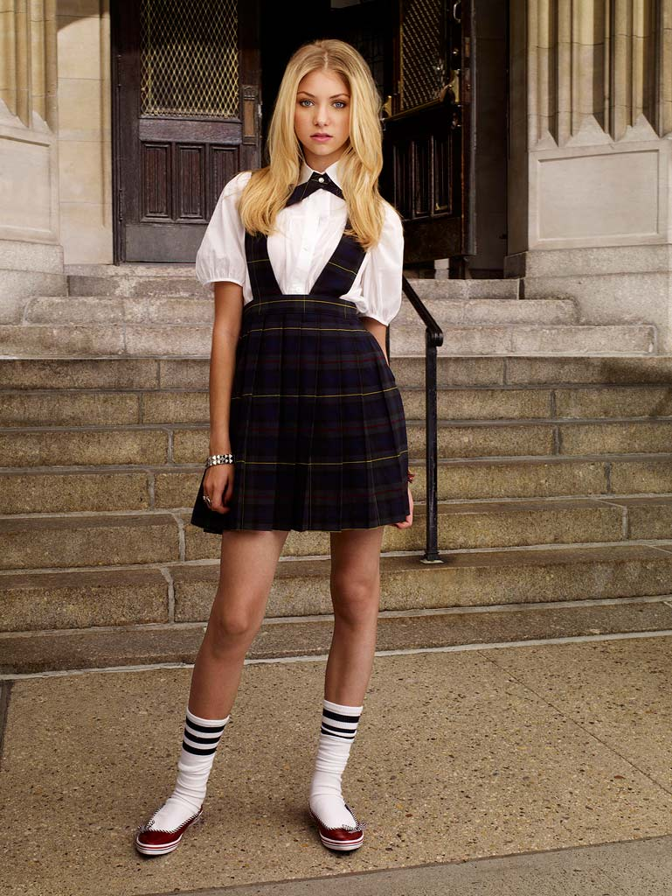
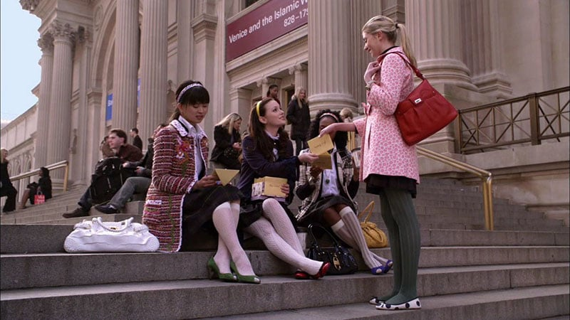
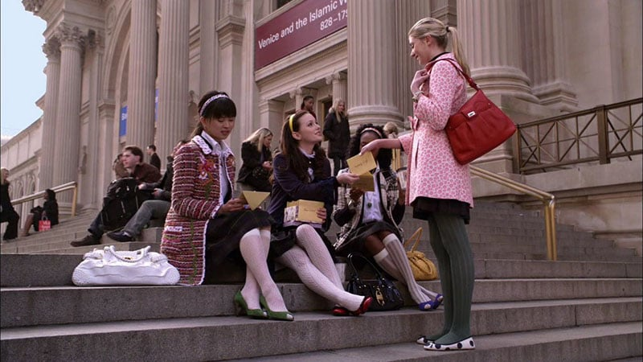
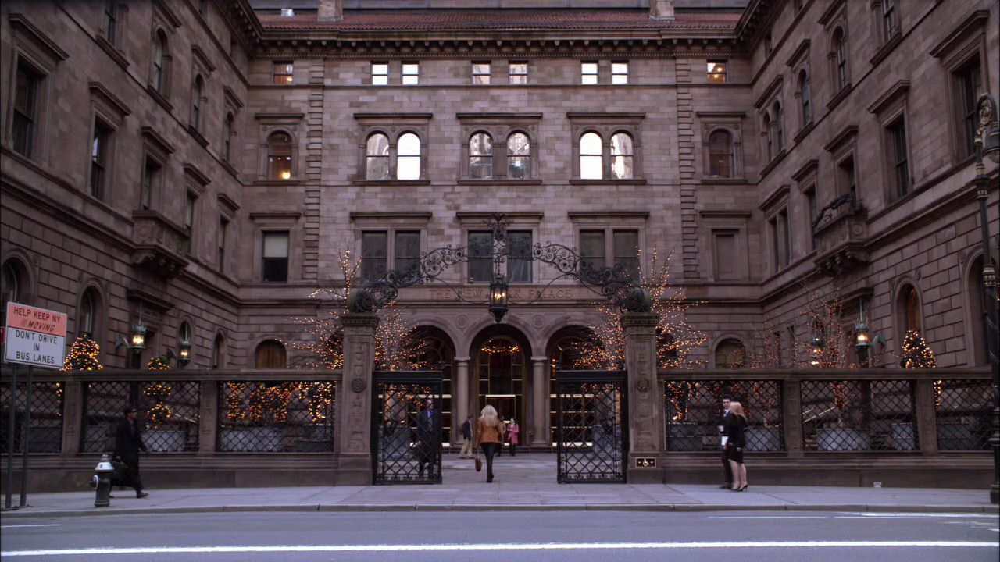
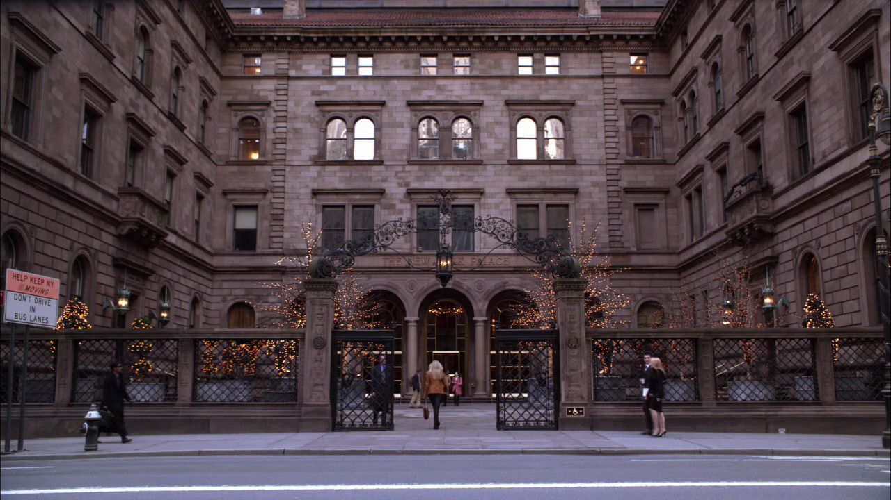
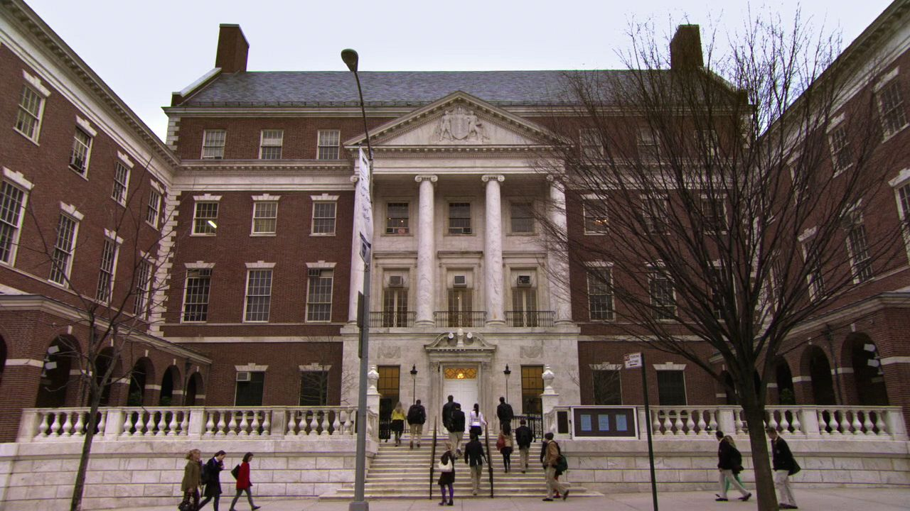
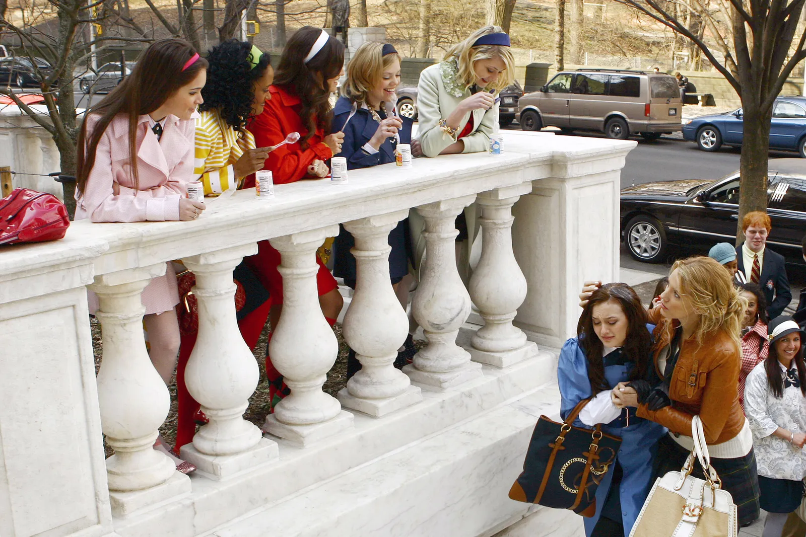
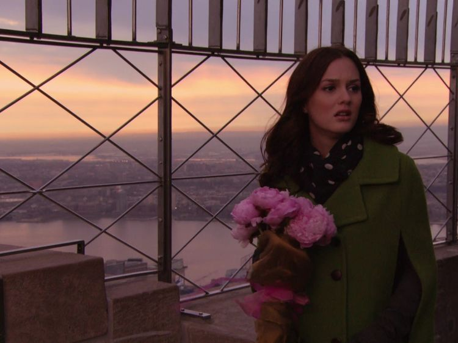
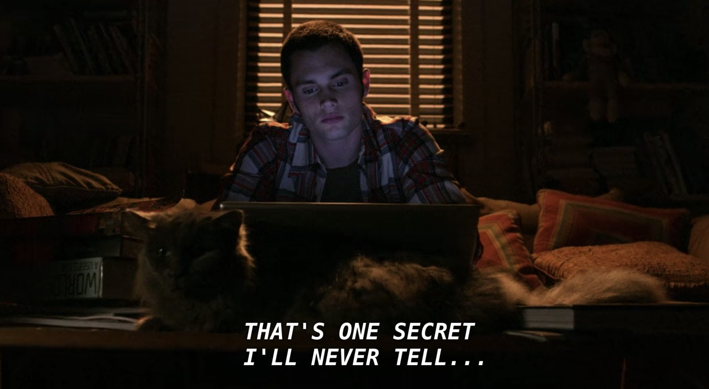

GOSSIP GIRL
OQUE SE PASSA
A trama norte-americana conta a história de um grupo de jovens que estudam em um colégio de elite em Manhattan, em Nova York. Porém, o cotidiano de luxo e dinheiro é afetado por uma pessoa anônima, que começa a divulgar grandes segredos dos alunos.A trama estreou na TV americana em 19 de Setembro de 2007 e teve seu último episódio em 17 de dezembro de 2012,contendo 6 temporadas.
Primeiro Episódio "Pilot"
O Retorno de Serena Van der Woodsen, a garota mais popular do Upper East Side, que após sumir misteriosamente por quase um ano, retorna inesperadamente.Enquanto todos especulam os motivos de sua volta e de sua partida, sua melhor amiga Blair Waldorf, que tornou-se a 'rainha' do pedaço não pretende afastar-se de seu posto tão cedo, e para isso, não medirá quaisquer esforços. Já seu namorado, Nate Archibald, pega-se balançado com a volta da loira e teme nutrir sentimentos por ela. Entretanto, seu melhor amigo Chuck Bass, um desprezível e mulherengo bilionário, guarda um segredo que poderá chocar a todos.
Segundo Episódio "The Wild Brunch"
Após a escandalosa festa “Beijo na Boca”, Serena recebe uma fria recepção de sua antiga amiga Blair, que revela que sabe que Serena dormiu com seu namorado, Nate, antes de misteriosamente abandonar a escola. Serena decide levar Dan para o Brunch de Chuck no The Palace, e Jenny busca conselhos com Blair, que percebe que pode ganhar algumas coisas deixando Jenny fazer parte de seu grupo.
CURIOSIDADES
1. A moda é uma parte fundamental da série,que influenciaram as tendências da moda na época, com marcas de luxo como Chanel e Dior sendo frequentemente apresentadas.Foi uma série com muito assunto de moda e beleza que contém muitos looks que são lembrados até hoje.
2. "Gossip Girl" foi filmada em locações reais na cidade de Nova York, tornando-se uma espécie de carta de amor à cidade. Muitos pontos icônicos, como o Met Steps no Metropolitan Museum of Art, se tornaram parte da série.
3. Ela ainda tem o seu próprio dia. Em Nova York, 26 de Janeiro é o “Dia Gossip Girl”, instituído pelo ex-prefeito Michael Bloomberg como uma forma de comemorar o 100º episódio.
4.O estilo mais clássico da Blair contou com duas musas fashion como inspiração: Anna Wintour e Audrey Hepburn e Serena em Kate Moss e Sienna Miller.
5.Em 2009,Lady Gaga faz uma perfomance cantando "Bad Romance" quando estava se tornando um fenômeno mundial.A cantora fez uma visita no set e fez uma participação especial em um episódio da série.
6.Primeiro o mais importante: quem é a Gossip Girl, afinal? A série revelou que é ninguém menos do que... Dan! Essa revelação é feita pelo próprio rapaz publicamente e Serena aceita bem a verdade, decidindo não fugir novamente.
ELENCO
BLAIR WALDORF-"Leighton Meester"

Blair é uma garota engraçada e superdotada que possui tanto um lado esnobe quanto um sensível. Devido a sua condição de "abelha-rainha" na sociedade de Manhattan, o seu comportamento e os seus relacionamentos estão sob constante vigilância de uma popular blogueira anônima denominada Gossip Girl.
SERENA VAN DER WOODSEN-"Blake Lively

Serena é uma adolescente alta, loira, magra e atraente do Upper East Side de Manhattan, em Nova York. Muitas das meninas da escola Constance Billard a acusam de usar sua boa aparência como um meio de garantir tudo o que ela quer. Ela não é particularmente qualificada academicamente, mas muitas vezes ela é informada de que não está atingindo todo o seu potencial.
CHUCK BASS-"Ed Weestwick"

Chuck Bass, é um adolescente, filho único do bilionário Bartholomew Bass, dono do luxuoso New York Palace Hotel, situado no Upper East Side, um dos mais chiques lugares de ManhattanSua mãe Elisabeth Fisher Bass morreu em seu parto (isso é o que Chuck acha ), por isso Chuck se culpa e acredita que seu pai também o culpa, pela falta de atenção e recorrentes discordâncias entre eles.O caráter de Chuck é completamente afetado por seus problemas familiares e por isso se torna garoto mimado, egoísta, arrogante, rancoroso e cruel.

Nathaniel é rico,popular e jogador de lacrosse. Sua mãe é uma socialite e seu pai é um ex-capitão da Marinha. Desde sempre, foi namorado de Blair. Seu hobbie favorito é correr no central park com o seu pai. É confuso, não sabendo o que realmente quer para si. Ele e Chuck Bass são melhores amigos e, por serem filhos unicos, cuidam um do outro e se tratam como irmãos. Contudo, o namoro com Blair Waldorf não é totalmente perfeito, porque Nate é apaixonado pela sua melhor amiga Serena e esconde isso até de si mesmo.
DAN HUMPHREY-"Penn Badgley"

A misteriosa Gossip Girl refere-se a Dan como "Lonely Boy" (Garoto Solitário) por ele sempre andar sozinho e não ter amigos. Filho do ex-roqueiro Rufus Humphrey, e irmão mais velho de Jenny Humphrey. É o melhor amigo de Vanessa Abrams, que na verdade é apaixonada por ele. Dan e sua família vivem em um loft no Brooklyn. Ele é bolsista na St. Jude's School for boys. Dan não tem amigos na escola por ser pobre, e é taxado de "outside", porém aparenta não se incomodar e até demonstra repulsa pelos colegas mauricinhos da escola, os quais Dan crítica duramente. Ele é apaixonado por Serena van der Woodsen desde que fora equivocadamente convidado para sua festa aos treze anos, e então apaixonou-se pela garota de cabelos dourados.
JENNY HUMPHREY-"Taylor Monmsen
Jenny é uma garota de classe média, mas que sonha em ser da "alta sociedade" de Manhattan, nessa temporada ela conhece Blair Waldorf, e para entrar no grupo de amigas de Blair, Jenny passa por muitas armações de diversos tipos, primeiramente relacionadas a 'hierarquia' da Constance, o colégio em que estuda. Porém, a Little J acaba não só tomando o lugar de Blair no colegial, como também em sua vida social. Causando brigas, confusões e discussões que qualquer Upper East Sider acompanha no blogue da Gossip Girl.
CENÁRIOS MARCANTES DE GOSSIP GIRL
Grand Central Terminal
Uma das cenas mais icônicas da série. E é justamente por onde a série começa. O Grand Central Terminal aparece logo nos primeiros minutos do primeiro episódio, quando Serena van der Woodsen volta para Nova York.


Metropolitan Museum of Art(MET)
Outro lugar de Nova York que é impossível não associar com os cenários de Gossip Girl é o Metropolitan Museum of Art. O MET aparece em incontáveis episódios da série, sendo sua primeira aparição também no primeiro episódio. É logo ali que a gente já fica sabendo que a escadaria do MET é reduto e quase que “propriedade” de Blair Waldorf.
 

New York Palace Hotel
Hotel em que Serena, Lily e Chuck costumavam morar. Por diversas vezes na primeira temporada os personagens transitaram pela entrada do hotel.
 

Museum of the City of New York
O Museu da Cidade de Nova York foi usado como locação para o colégio onde a galera de Gossip Girl estudava. Na verdade, foram usados dois prédios diferentes. No entanto, um deles era muito pequeno e dificultava as gravações de cenas mais amplas, o que fez com que a equipe buscasse algo maior.
 Empire State Building
Como não seria diferente, Gossip Girl também tem sua cena no observatório. Foi no último episódio da terceira temporada, quando o Chuck avisa a Blair que estaria esperando ela no topo do Empire State. Mas aí a Dorota entra em trabalho de parto, a Blair não chega a tempo, o Chuck fica com a Jenny e rola todo aquele bafafá que quem é fã da série com certeza vai lembrar.

Central Park
Os encontros pelo Central Park entre os personagens eram constantes. Mas alguns locais se destacam, como o Bethesda Terrace e o Bethesda Fountain,duas cenas muito importantes de Gossip Girl foram filmadas por aqui: a grande reconciliação de Blair e Serena e o casamento mais importante da série de Blair e Chuck.


AFINAL,QUEM É A GOSSIP GIRL?
Na reta final da série,foi revelado que Dan Humphrey era a Gossip Girl - o autor do blog que escrevia todas as fofocas maldosas sobre os colegas. Ele explicou que o propósito do blog era fazer com que ele se aproximasse de Serena,por quem sempre foi apaixonado.
